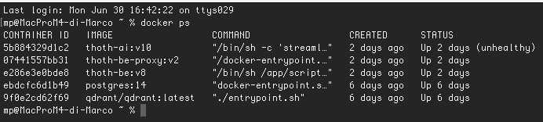
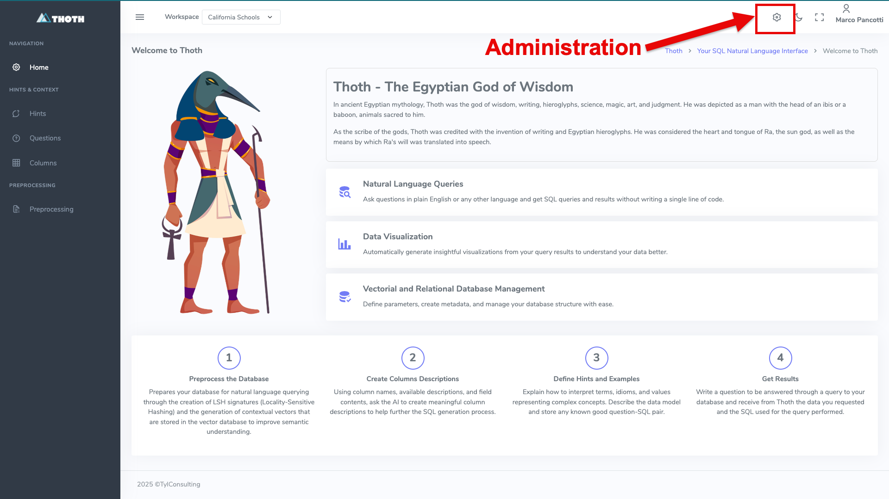
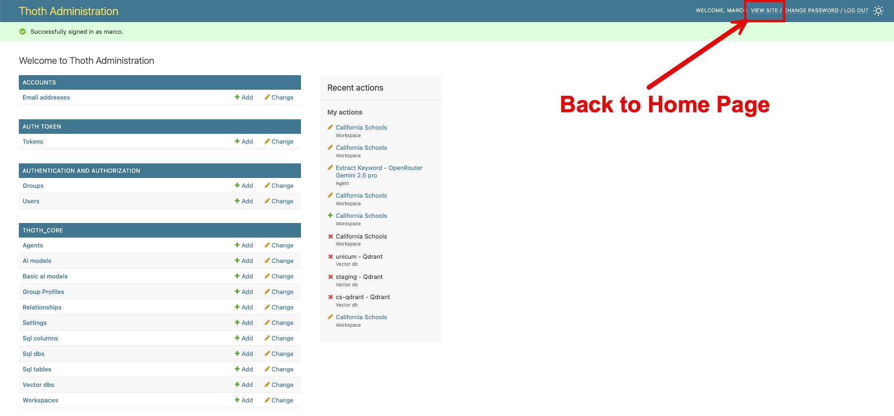
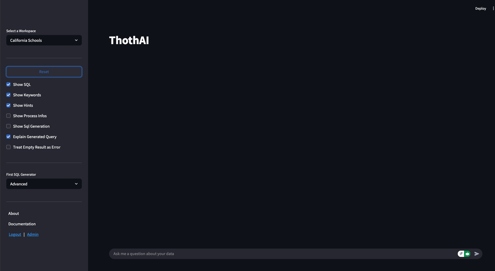

Installazione sotto Docker
L'installazione più semplice è quella che può essere effettuata utilizzando Docker.
Installazione di Docker
L'installazione e la configurazione di Docker sono attività al di fuori dello scope di questo documento. Eventualmente seguire li istruzioni per Installare Docker sul vostro sistema
Dando per scontato che Docker sia installato e funzionante, queste sono le azioni da eseguire per installare ThothAI sotto Docker
1 - Procedura di installazione di Thoth (backend)
1.1 - Impostazione del file _env
Per prima cosa è necessario creare e successivamente completare il file _env. Per farlo si deve:
- copiare il file
_env.templatein_env - aprire con un editor qualunque il file
_enve riempire i placeholder delle API key degli LLM che intendete utilizzare - inserire la chiavi SECRET_KEY e DJANGO_API_KEY appena generate negli appositi placeholder
1.2 - Esecuzione del docker-compose up
Una volta disponibili i sorgenti eseguire il seguente comando:
Una volta eseguito il docker-compose up verificare che i processi siano correttamente funzionanti con.Deve comparire una lista come la seguente:

La prima colonna a sinistra mostra gli id dei container presenti. Individuare l'id di `thoth-be e copiarlo in memoria
Accedere al container eseguendo il comando
Ora si può procedere ad eseguire i comandi necessari per la configurazione minima di default
1.3 - Creazione di un superuser
Il primo comando crea un utente superuser da utilizzare per accedere al backend.
Rispondere alle domande poste da Thoth (in quanto applicazione Django) e creare un utente superuser, utilizzando uno username diverso da quello che avranno gli utenti reali.
1.4 - Setup iniziale
Procedere quindi a caricare un setup base completo e consistente da usare come setup minimo iniziale.
Attenzione al parametro --source!
E' importante indicare --source=docker, in quanto alcuni parametri per il deploy sotto Docker sono diversi rispetto a quelli usati per il deploy in locale.
Nel caso abbiate sbagliato tenete conto che la procedura di load_defaults può essere ripetuta, e che il parametro fondamentale da verificare è il VectorDb cs_sqlite che deve avere come host=thoth-qdrant e non localhost
Con il comando `load_defaults si creano cinque gruppi (Admin, Editor, BasicUser, TechUser e DebugUser) e due utenti (marco e maria). Inoltre si crea un setup completo per modelli AI, agenti, database e workspace con delle configurazioni base funzionanti, associate agli utenti marco e maria, che possono essere usate come template per i futuri utenti reali.
2 - Installazione dell'applicazione di frontend, ThothSL
Una volta installato il backend, si può installare il frontend, dal nome ThothSL (SL sta per Streamlit che è il tool usato per gestire la user interface). Entrare quindi nel progetto ThothSL e procedere come segue:
2.1 - Impostazione del file _env
Copiare _env.template in `_env e compilare i placeholder necessari.
Devono essere necessariamente inserite le key di Django DJANGO_API_KEY e di almeno un provider LLM. La KEY di Logfire è fortemente consigliata, ma non obbligatoria.
2.2 - Esecuzione del docker-compose up
3 - Verifica del funzionamento dell'applicazione sotto Docker
3.1 - Verifica del backend
Per verificare il backend è possibile aprire http://localhost:8040 e fare login con l'utente superuser appena creato.
Ci si ritroverà di fronte a questa form:

Cliccando sull'icona in alto a destra, evidenziata col contorno in rosso, è possibile accedere all'area amministrativa:

Cliccando sul link "view site" si torna alla Home Page del backend
3.2 - Verifica del frontend
Per verificare il frontend è possibile andare al http://localhost:8501 e fare login sempre con credenziali marco/thoth_pwd.
Ci si trova di fronte a questa form:

4 - Conclusione
Le due componenti di ThothAI, denominate Thoth e ThothSL, sono ora "up and running" su Docker e si può passare al completamento della loro configurazione. Per un setup rapido, che fa uso dei default e dura pochi minuti, andare alla pagina dove viene descritto il Quick Setup.
In seguito si potrà realizzare un setup completo, con nuovi utenti, nuovi gruppi, nuovi database, ecc. Per farlo partire dalla pagina di setup dello Usere Manual